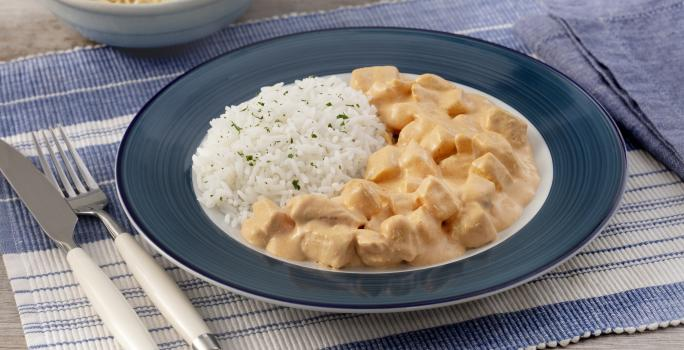

Strogonoff de Frango

Descrição
Ah, o delicioso Strogonoff de Frango, uma verdadeira explosão de sabores que vai conquistar o seu paladar!
Se você está procurando uma receita simples, rápida e irresistível, acabou de encontrar!
Nossa receita é pensada para tornar o seu momento na cozinha mais prazeroso, sem complicações,
mas com aquele toque caseiro que faz toda a diferença. Afinal, cozinhar não precisa ser difícil para ser delicioso!
Então, o que você está esperando? Deixe-se levar pelos encantos do Strogonoff de Frango
e transforme os seus momentos à mesa em verdadeiros banquetes de sabor!
Corra para a cozinha, pegue os ingredientes e embarque nessa experiência inesquecível.
Sua jornada culinária rumo ao prazer está prestes a começar! Bon appétit!
Ingredientes:
- 500g de peito de frango cortado em cubos
- 1 cebola média picada
- 2 dentes de alho picados
- 200 gramas de cogumelos fatiados opcional
- 2 colheres de sopa de manteiga ou óleo
- 1 colher de ketchup
- 1 colher de sopa de mostarda
- 1 colher de sopa de molha inglês
- 1 lata de creme de leite (sem soro)
- Sal e pimenta a gosto
- Salsinha picada para decorar
- Arroz branco para acompanhar
Como preparar?
- Em uma panela grande, derreta a manteiga (ou aqueça o óleo) em fogo médio.
- Adicione o alho picado e a cebola picada à panela, refogando até ficarem dourados e macios.
- Acrescente os cubos de frango e cozinhe até que estejam dourados por todos os lados.
- Se estiver usando cogumelos, adicione-os à panela e refogue por alguns minutos.
- Tempere a mistura com sal e pimenta a gosto.
- Adicione o ketchup, a mostarda e o molho inglês, misturando bem para que os sabores se incorporem.
- Reduza o fogo para médio-baixo e deixe cozinhar por cerca de 5 minutos, mexendo ocasionalmente.
- Desligue o fogo e adicione o creme de leite à mistura, mexendo para que o molho fique cremoso e homogêneo.
- Volte a ligar o fogo em fogo baixo e aqueça o strogonoff por mais alguns minutos, sem deixar ferver.
- Retire do fogo e polvilhe salsinha picada por cima para decorar.
- Sirva o strogonoff de frango quente acompanhado de arroz branco.
E assim, com o coração e o estômago plenos de satisfação, encerramos essa jornada culinária com chave de ouro!
O Strogonoff de Frango conquistou nossos paladares e nos presenteou com momentos deliciosos à mesa
Espero que tenha se apaixonado por essa receita tanto quanto nós! Agora é só saborear e compartilhar esse prazer com quem você ama.Bon appétit!